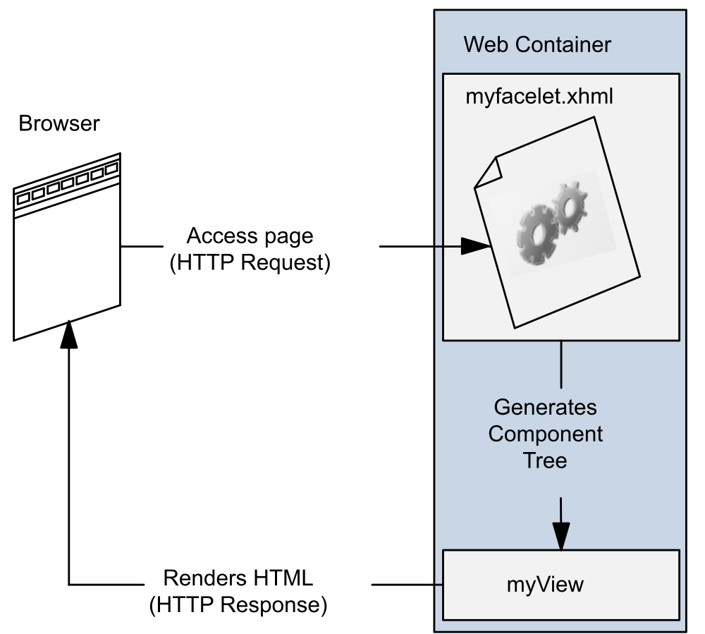
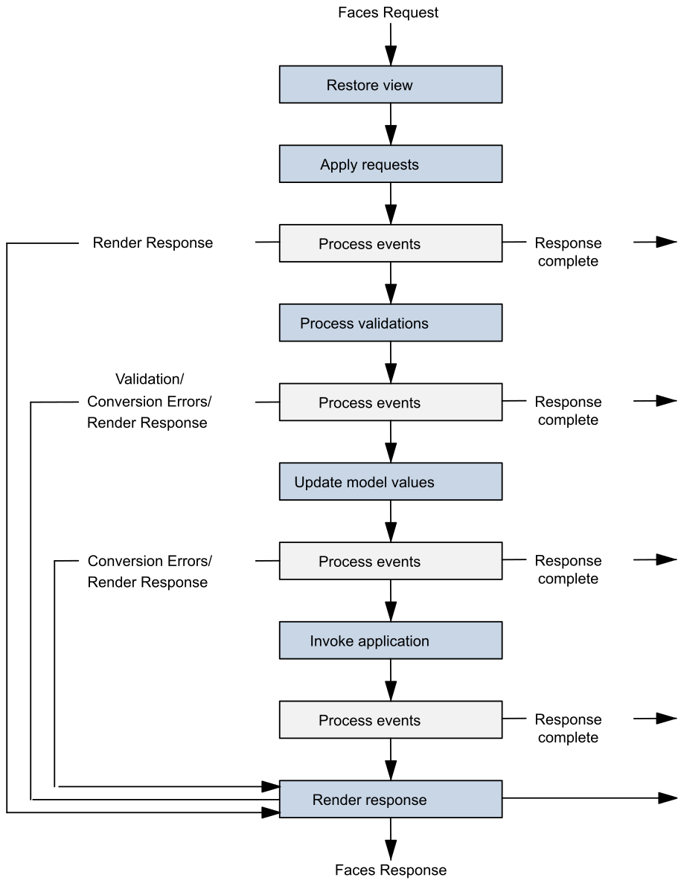

Web Dynamique côté Serveur
Jakarta Faces
Jakarta Faces
- Framework pour applications orientées présentation
- Pour la création d'UI web: interfaces basées sur des formulaires HTML
- MVC:
- CDI beans pour le modèle
- Pages
.xhtml(Facelets) pour la vue - Servlet
FacesServletpour le contrôleur
Jakarta Faces
Activation du framework
FacesServletest le point d'entrée des requêtes Faces- Servlet fournie par le framework
- Pour "activer" le framework, il faut la déclarer dans
web.xml
<?xml version="1.0" encoding="UTF-8"?>
<web-app xmlns="http://xmlns.jcp.org/xml/ns/javaee"
xmlns:xsi="http://www.w3.org/2001/XMLSchema-instance"
xsi:schemaLocation="http://xmlns.jcp.org/xml/ns/javaee http://xmlns.jcp.org/xml/ns/javaee/web-app_3_1.xsd"
version="3.1">
<servlet>
<servlet-name>Faces Servlet</servlet-name>
<servlet-class>jakarta.faces.webapp.FacesServlet</servlet-class>
<load-on-startup>1</load-on-startup>
</servlet>
<servlet-mapping>
<servlet-name>Faces Servlet</servlet-name>
<url-pattern>*.xhtml</url-pattern>
</servlet-mapping>
<context-param>
<param-name>jakarta.faces.AUTOMATIC_EXTENSIONLESS_MAPPING</param-name>
<param-value>true</param-value>
</context-param>
...
</web-app>
AUTOMATIC_EXTENSIONLESS_MAPPING autorise les accès aux vues sans l'extension .xhtmlJakarta Faces
Activation du framework
FacesServletest le point d'entrée des requêtes Faces- Servlet fournie par le framework
- Alternative: créer une classe annotée avec
@FacesConfig
@FacesConfig()
@ApplicationScoped
public class FacesActivator { }
web.xmlFacelets
- Langage déclaratif pour la création des vues
- Facelets remplace
JSPdepuis la version 9 - Basé sur la construction d'un arbre de composants
- Page
.xhtmlqui décrit l'arbre (balises HTML et Facelets)

Facelets
Différences avec JSP:
- Page JSP traduite en servlet
- Vue HTML regénérée à chaque requête
- Page Facelets = arbre de composants
- Chaque composant est un objet Java autonome
- L'état des composants est sauvegardé entre les requêtes
- Construction de l'arbre gérée par Jakarta Faces
Facelets
<!DOCTYPE html>
<html lang="en"
xmlns:h="jakarta.faces.html"
xmlns:f="jakarta.faces.core">
<h:head>
<h:outputStylesheet library="css" name="default.css"/>
<title>Facelets Application</title>
</h:head>
<h:body>
<main>
<h:graphicImage value="#{resource['images:logo-couleur.png']}" alt="Master SD logo"/>
<h2>Hello, welcome to Facelets!</h2>
<h:form>
<h:outputLabel for="name" value="Enter your name: " />
<h:inputText id="name" value="#{userBean.name}" />
<h:commandButton value="Greet" action="#{userBean.greet()}" />
</h:form>
</main>
</h:body>
</html>
- Balises HTML5, reportées dans la page HTML résultante
Facelets
<!DOCTYPE html>
<html lang="en"
xmlns:h="jakarta.faces.html"
xmlns:f="jakarta.faces.core">
<h:head>
<h:outputStylesheet library="css" name="default.css"/>
<title>Facelets Application</title>
</h:head>
<h:body>
<main>
<h:graphicImage value="#{resource['images:logo-couleur.png']}" alt="Master SD logo"/>
<h2>Hello, welcome to Facelets!</h2>
<h:form>
<h:outputLabel for="name" value="Enter your name: " />
<h:inputText id="name" value="#{userBean.name}" />
<h:commandButton value="Greet" action="#{userBean.greet()}" />
</h:form>
</main>
</h:body>
</html>
- Balises HTML5, reportées dans la page HTML résultante
- Accès aux bibliothèques de balises standard : composants (
h:) et fonctionnalités de bases (f:)
Facelets
<!DOCTYPE html>
<html lang="en"
xmlns:h="jakarta.faces.html"
xmlns:f="jakarta.faces.core">
<h:head>
<h:outputStylesheet library="css" name="default.css"/>
<title>Facelets Application</title>
</h:head>
<h:body>
<main>
<h:graphicImage value="#{resource['images:logo-couleur.png']}" alt="Master SD logo"/>
<h2>Hello, welcome to Facelets!</h2>
<h:form>
<h:outputLabel for="name" value="Enter your name: " />
<h:inputText id="name" value="#{userBean.name}" />
<h:commandButton value="Greet" action="#{userBean.greet()}" />
</h:form>
</main>
</h:body>
</html>
- Balises HTML5, reportées dans la page HTML résultante
- Accès aux bibliothèques de balises standard : composants (
h:) et fonctionnalités de bases (f:) <h:head>,<h:body>nécessaires pour la gestion des ressources externes (CSS, script, images)
Facelets
<!DOCTYPE html>
<html lang="en"
xmlns:h="jakarta.faces.html"
xmlns:f="jakarta.faces.core">
<h:head>
<h:outputStylesheet library="css" name="default.css"/>
<title>Facelets Application</title>
</h:head>
<h:body>
<main>
<h:graphicImage value="#{resource['images:logo-couleur.png']}" alt="Master SD logo"/>
<h2>Hello, welcome to Facelets!</h2>
<h:form>
<h:outputLabel for="name" value="Enter your name: " />
<h:inputText id="name" value="#{userBean.name}" />
<h:commandButton value="Greet" action="#{userBean.greet()}" />
</h:form>
</main>
</h:body>
</html>
- Balises HTML5, reportées dans la page HTML résultante
- Accès aux bibliothèques de balises standard : composants (
h:) et fonctionnalités de bases (f:) <h:head>,<h:body>nécessaires pour la gestion des ressources externes (CSS, script, images)<h:form>,<h:outputText>,<h:inputText>,<h:commandButton>pour la gestion des formulaires
Librairies de balises
| URI | Préfixe | Description | Exemple |
|---|---|---|---|
jakarta.faces.html |
h: |
Composants d'interfaces utilisateur | <h:body>, <h:form> |
jakarta.faces.core |
f: |
Fonctionnalités spécifiques à Jakarta Faces | <f:validateLongRange>, <f:ajax> |
jakarta.faces.facelets |
ui: |
Fonctionnalités de templating | ui:component, ui:composition |
jakarta.tags.core |
c: |
Balises pour les itérations, tests, etc. | <c:forEach>, <c:if> |
jakarta.tags.functions |
fn: |
Fonctions utiles (math, chaînes, etc.) | fn:substring, fn:toUpperCase |
jakarta.faces.composite |
cc: |
Pour définir de nouveaux composants | <cc:interface>, <cc:implementation> |
Liste assez complète des balises courantes: Documentation Jakarta EE
Ressources externes
- Les ressources externes (CSS, images, scripts) sont gérées par le framework
- Balises dédiées (e.g.
<h:outputStylesheet>,<h:graphicImage>et<h:outputScript>) - Les ressources sont placées dans un sous-dossier (nom libre) du dossier
/resourcesdu projet:
/resources
/css
default.css
/images
logo-couleur.png
/js
script.js
library permet de spécifier le dossier de la ressource
<h:outputStylesheet library="css" name="default.css" target="head"/>
<h:outputScript library="js" name="script.js" target="head"/>
<h:graphicImage library="images" name="logo-couleur.png" alt="Master SD logo"/>
#{resource['images:logo-couleur.png']}Backing beans
- Les Facelets sont liés à des backing beans
- CDI bean qui contient l'état (attributs) et les commandes (méthodes) de la facelet
- Accès aux beans dans Facelets via EL (Expression Language)
#{userBean.name}
#{userBean.doGreeting()}
@Named et un scope approprié
@Named
@RequestScoped
public class UserBean { ... }
Backing beans
- backing beans = sorte de contrôleurs pour les vues (design pattern command)
- Dans une application type, on a généralement un backing bean par facelet
- Nouveau scope
@ViewScoped: réutilise la même instance tant que l'utilisateur interagit avec la même page
Exemple (1)
Backing bean UserBean.java
@Named
@RequestScoped
public class UserBean {
private String name;
private String greeting;
public String getName() {
return name;
}
public void setName(String name) {
this.name = name;
}
public String getGreeting() {
return greeting;
}
public void greet() {
greeting = "Hello " + name;
}
}
- Bean créé à la réception d'une requête vers une vue qui fait référence à
userBean RequestScoped: bean détruit à la fin de la requête, quand la réponse est envoyée
Exemple (1)
Vue greeting.xhtml
<!DOCTYPE html>
<html lang="en" xmlns:h="jakarta.faces.html" xmlns:f="jakarta.faces.core">
<h:head>
<title>Greeting form</title>
</h:head>
<h:body>
<main>
<h:form>
Enter your name: <h:inputText id="name" value="#{userBean.name}" />
<h:commandButton value="Greet" action="#{userBean.greet()}" />
<h:outputText value="#{userBean.greeting}" rendered="#{not empty userBean.greeting}" />
</h:form>
</main>
</h:body>
</html>
- Requête
GETversgreeting.xhtml: bean créé et lié à la vue userBean.nameaffiché dans l'inputText: icinulldonc le champ de saisie est vide- l'
outputTextn'est pas affiché caruserBean.greetingestnull - Page HTML construite et retournée au client, le bean est détruit
Exemple (1)
Vue greeting.xhtml
<!DOCTYPE html>
<html lang="en" xmlns:h="jakarta.faces.html" xmlns:f="jakarta.faces.core">
<h:head>
<title>Greeting form</title>
</h:head>
<h:body>
<main>
<h:form>
Enter your name: <h:inputText id="name" value="#{userBean.name}" />
<h:commandButton value="Greet" action="#{userBean.greet()}" />
<h:outputText value="#{userBean.greeting}" rendered="#{not empty userBean.greeting}" />
</h:form>
</main>
</h:body>
</html>
- Utilisateur clique sur le bouton
Greet: requêtePOSTversgreeting.xhtmlet bean recréé userBean.nameest mis à jour avec la valeur saisie par l'utilisateur et affiché dans l'inputTextuserBean.greet()est appelé,greetingest mis à jour et affiché dans l'outputText- Page HTML construite et retournée au client, le bean est détruit
Exemple (2)
Backing bean UserBean.java
@Named
@ViewScoped
public class UserBean {
private String name;
public String getName() {
return name;
}
public void setName(String name) {
this.name = name;
}
public String greet() {
return "greeting-response"; // name of the next view
}
}
- La méthode
greet()renvoie le nom de la prochaine vue (i.e.greeting-response.xhtml) - Une méthode qui renvoie
nullouvoidrenvoie vers la même vue ViewScoped: le bean est détruit dés lors qu'une méthode invoquée retourne le nom d'une autre vue
Exemple (2)
Vue greeting.xhtml
<!DOCTYPE html>
<html lang="en"
xmlns:h="jakarta.faces.html"
xmlns:f="jakarta.faces.core">
<h:head>
<title>Greeting form</title>
</h:head>
<h:body>
<main>
<h:form>
<h:outputLabel for="name" value="Enter your name: " />
<h:inputText id="name" value="#{userBean.name}" />
<h:commandButton value="Greet" action="#{userBean.greet()}" />
</h:form>
</main>
</h:body>
</html>
- Requête
GETversgreeting.xhtml: même comportement que précédemment
Exemple (2)
Vue greeting-response.xhtml
<!DOCTYPE html>
<html lang="en"
xmlns:h="jakarta.faces.html">
<h:head>
<title>Greeting page</title>
</h:head>
<h:body>
<main>
<h2>Hello, #{userBean.name}!</h2>
</main>
</h:body>
</html>
- Utilisateur clique sur le bouton
Greetdegreeting.xhtml: envoi d'une requêtePOSTversgreeting.xhtml - Le champ
namedu bean existant est mis à jour avec la valeur saisie par l'utilisateur - La méthode
greet()est appelée, qui renvoie le nom de la vue suivante:greeting-response.xhtml - La vue
greeting-response.xhtmlest rendue, avec le nom de l'utilisateur saisi - Le bean est détruit après le rendu et l'envoie de la réponse au client
Convertisseurs standards
- Les données saisies dans un formulaire sont des chaînes de caractères
- Il faut les convertir dans le type Java adéquat tel que définit dans le bean
- La plupart des conversions sont automatiques:
<h:inputText id="age" title="Enter your age:" value="#{userBean.age}">
Date et Number
<h:inputText id="dateofbirth" title="Enter your date of birth:" value="#{userBean.dateOfBirth}">
<f:convertDateTime type="localDateTime" pattern="dd/MM/yyyy" />
</h:inputText>
<h:message for="dateofbirth" />
<h:message/> permet d'afficher un message d'erreur automatique si la conversion échoueConvertisseurs non standards
- Si aucun convertisseur standard ne peut être utilisé, on peut définir son propre convertisseur
- Classe qui implémente
javax.faces.convert.Converter
@FacesConverter(forClass=java.net.URL.class, value="urlconverter")
public class UrlConverter implements Converter {
@Override
public Object getAsObject(FacesContext context, UIComponent component, String value) {
try {
return new URL(value);
} catch (MalformedURLException e) {
throw new ConverterException(new FacesMessage(FacesMessage.SEVERITY_ERROR, "Conversion Error", "Not a valid URL"));
}
}
@Override
public String getAsString(FacesContext context, UIComponent component, Object value) {
if (value == null) {
return "";
}
return ((URL) value).toString();
}
}
Validateurs standards
- Après conversion, les données peuvent être validées:
<h:inputText id="userNo" title="Enter a number from 0 to 10:" value="#{userNumberBean.userNumber}">
<f:validateLongRange minimum="#{userNumberBean.minimum}" maximum="#{userNumberBean.maximum}"/>
</h:inputText>
<h:message for="userNo" />
@Named
@ViewScoped
public class UserNumberBean {
@Min(0)
@Max(10)
private int userNumber;
...
}
Validateurs non standards
- Validation via une méthode du bean:
@Named
@ViewScoped
public class UserNumberBean {
...
public void validateNumber(FacesContext context, UIComponent component, Object value) {
Integer number = (Integer) value;
if (number < 0 || number > 10) {
((UIInput) component).setValid(false);
FacesMessage message = new FacesMessage("Invalid number: Must be between 0 and 10.");
context.addMessage(component.getClientId(context), message);
}
}
}
validator
<h:inputText id="userNo" title="Enter a number from 0 to 10:"
value="#{userNumberBean.userNumber}"
validator="#{userNumberBean.validateNumber}">
</h:inputText>
Validateurs non standards
- Validation via une classe qui implémente
javax.faces.validator.Validator:
@FacesValidator("evenNumberValidator")
public class EvenNumberValidator implements Validator {
@Override
public void validate(FacesContext context, UIComponent component, Object value) throws ValidatorException {
Integer number = (Integer) value;
if (number < 0 || number > 10) {
((UIInput) component).setValid(false);
FacesMessage message = new FacesMessage("Invalid number: Must be between 0 and 10.");
FacesContext.getCurrentInstance().addMessage(null, message);
throw new ValidatorException(message);
}
}
}
f:validator
<h:inputText id="evenNo" title="Enter an even number:" value="#{userNumberBean.evenNumber}">
<f:validator validatorId="evenNumberValidator" />
</h:inputText>
Cycle de vie

- Première requête vers une page facelets
- Création d'un arbre de composants vide (en Java)
- Arbre peuplé avec les composants de la vue facelets
- Rendu de la vue facelets pour création de la page HTML résultante
- Envoi de la page HTML au navigateur
- Sauvegarde de l'état de la vue pour requêtes suivantes
Cycle de vie
- Requêtes suivantes (soumission formulaire)
- La vue est restaurée
- Paramètres de requête ajoutés dans l'arbre de composants
- Conversion et validation des données saisies
- Si erreurs: étape de rendu de la vue
- Si ok, données mises à jour dans le backing bean
- Exécution de l'action associée à la commande utilisateur
- En fonction du retour de l'action, on détermine la vue à rendre
Événements
- Interface utilisateur = intéractions utilisateurs
- Plusieurs types d'événements sont générés lors du cycle de vie